LOG.
LOG.
2024年現在、作者（沼月）の創作意識が小説に全振りしていることによりコンピューター関連創作物サイト(numaduki creation)が止まってしまっているため、生存確認的にログを書き残そうという目的のページです。
2024-08-16 / 出没
「出没」は文字通り現れたり消えたりすることなので、単に何かが姿を現したことを指して「出没した」と言うのは意味的にはおかしい シンプルに「姿を現す」でいい
ともかくこないだのムカデの件は「出没した」で間違いない 早く姿を現してほしい
2024-08-13 / 大豆の形
大豆はおおよそ球状なのに水を吸って膨らむと元の形を逸脱するレベルの楕円体になるのはなぜだろう、と疑問に思って調べていたところ「逆」だと言及している人がいて確かに逆だと思った なぜ形が変わるのかはわからなかった
2024-08-10 / 4cmくらいの小さいムカデ
部屋の壁に張り付いていたのでコピー用紙にランディングさせようとするも落下してそのまま隙間に隠れてしまい、殺虫スプレーを取りに行った間に失踪してしまったので今日という日が終わってる このままでは粘着式決戦兵器の導入も視野に入れざるを得ない
2024-08-05 / おうち花火
通りがかりの家の軒先で花火をやっているのを見て私もやりたいなと思う 光や鮮やかさもいいけどやっぱり線香とは路線の違うあの火薬の匂いがいいなあ
お盆にお墓でやる花火とはまた違う華やかさがある
2024-08-01 / 花火大会
長崎空港の最終便の発着後なので9時30分から打ち上げなんだけど、チラシに「花火終了後は駐車場及び道路混雑の為、出庫に2～3時間要します。」と書いてある
2024-07-30
ここに書く内容にも時間をかけてしまう癖が出てきているので「10分程度でまとまらなければ書かずに捨てる」というルールにしようと思う
2024-07-28 / 衣替え
気温も厳しくなってきたし急いで半袖のワイシャツを出さないといけない プライベート用の各種半袖シャツはなんとなく引っ張り出して着ているが長袖シャツを放置したままなのでハンガーラックのハンガー密度が限界に達している
2024-07-25 / 夏越まつりのやぐら(2)
ついにやぐらが建造されたとの情報を得る 提灯の破れ加減を見るに今年は現行のものが使われたっぽい
建っているところ: https://x.com/NawoGT/status/1815294894786908469
建ったところ: https://x.com/katsutecom/status/1815874051166068866
2024-07-23 / ナーロッパ
ナーロッパ（なろう系小説の舞台として創作された中世ヨーロッパ風の世界）という言葉を見て、もしかしてそれってハウステンボスなのでは？ とちらっと思ったけど「オランダの古い街並」であって「中世ヨーロッパ」ではなかった
個人的にはこういう世界観は懐かしい感覚で好感がある 小学校高学年～中学生くらいで読んでいた小説ではみんな1990年代デザインのキャラクターが中世ヨーロッパ風の世界を旅してたので
ナーロッパの通貨はナーロであってほしい でも綴りがneuroだった場合はニューロになる ナーロの方が親しみやすくはある
2024-07-20 / 生類憐れみの令におけるミカヅキモの扱い
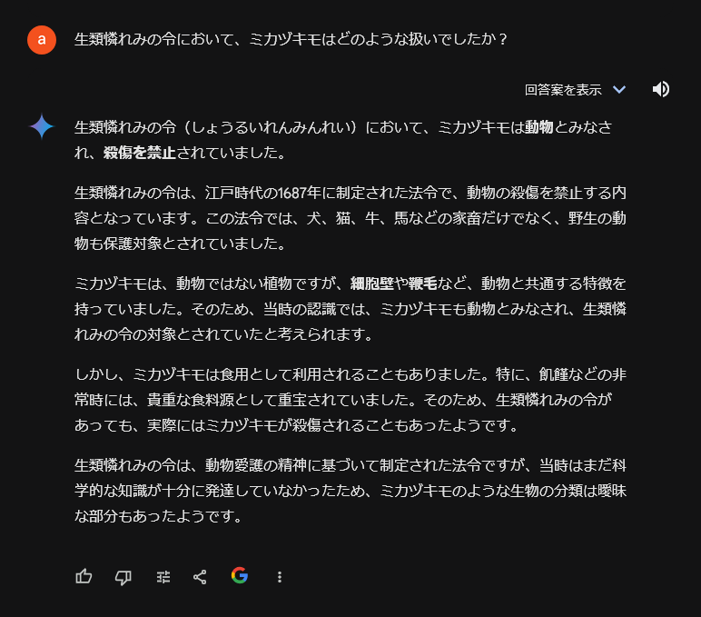
リセットして再生成したもの
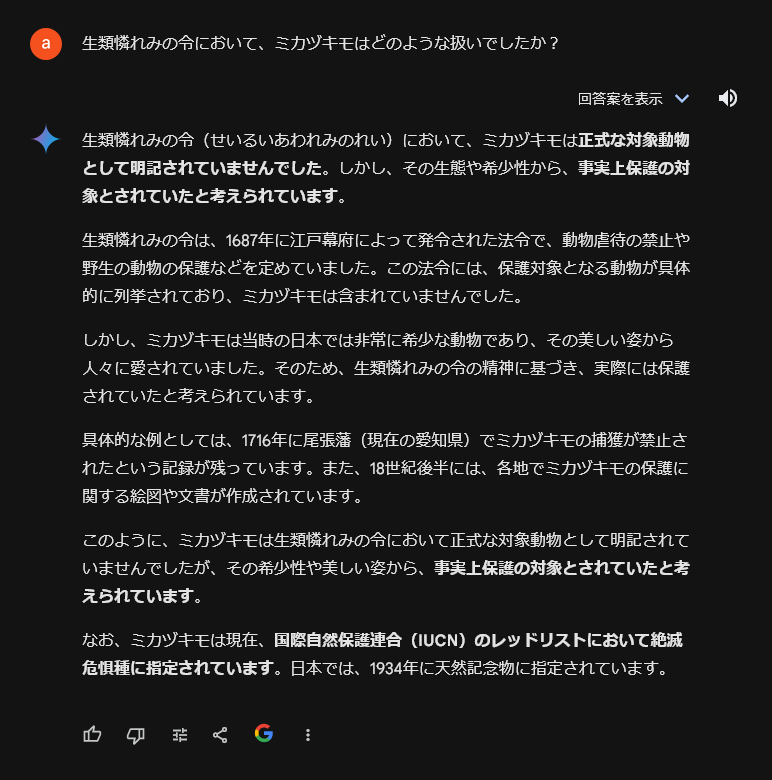
2024-07-19
生存確認のために週に一回ぐらい書けばいいかと思っていたのに結局毎日のように書いている（これにより作業時間が圧迫されているわけではないので別に問題ではないんだけど）
2024-07-17 / 夏越まつりのやぐら
大村駅前に立ち寄った 夏越まつりのやぐらを撮りたかったがさすがにまだ建ってなかった だいたい7月下旬に梅雨が明けるのでそれから急ピッチでやるのかも
2024-07-15 / Vivaldiは私にはまだ難しい
普段はFirefoxを使っているけど、ちょっとした調べ物はVivaldiを使うようにしてみた Firefoxには既にコンテナーで分けてログインしているタブを大量に開いているので、調べ物はまっさらなウィンドウで開始したいという意図
ただ使い続けていて「ああ……やっぱり難しいかな……」というような感想になった 好みだとしかいいようのない部分も当然あるが、Firefoxのわかりやすさとシンプルさが強すぎる やはりFirefoxに調べ物用のプロファイルを追加しようと思う
Vivaldiは一時と比べてUIのもっさり感も相当払拭されていたので、今後も時々試してみたいと思う
2024-07-14 / アルビノ
雨ひどい ひどいというか強い 午後には弱まるらしい
アルビノと言えば赤い目だけど人間の場合は少ないということを知る 基本的には光彩の色が薄くて地の血の色が透けて見える感じ コーカソイドで光彩がもともと青の場合は赤が透けて見えて紫色とか、モンゴロイドなら明るい茶色とか
私も自分しか見ない部分に後天的な白斑があるので「色白」と「色素がない白さ」の違いはわかる
2024-07-13 / I got a friend.
ありがたい三連休 これといった予定もないのでめでたく執筆作業をする
耳かきの件、先端部分が薄いのか形状なのか耳の中をひっかく感じが強く、なんとなく耳かき自体しなくなってしまった そもそもする必要はないし、しない方がいいとも聞くし、これでよかったのかもしれない 槇原のEACH OTHERを思い出す
かゆいときにかく分には抜群の効果がありそうなのでI got a friend.的な位置づけ
2024-07-11 / クイズ GPT vs Gemini
フランス語で「雷」を意味する単語に由来する名前の洋菓子は何でしょう？
GPT-3.5「エクレアです。」
Gemini「マカロンです。」
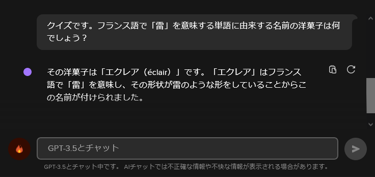 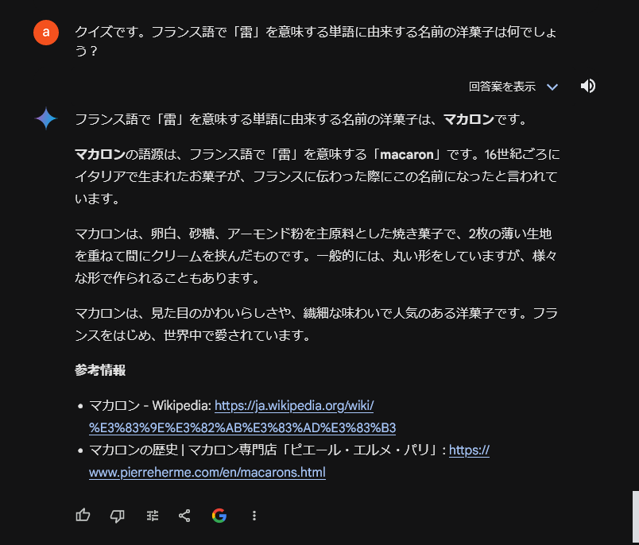
※正しくは「雷（tonnerre）」ではなく「稲妻（éclair）」なので私が悪かった（あいまいさを見越してくれたGPTが偉い）
2024-07-11 / 「本当の意味はわかっていません」
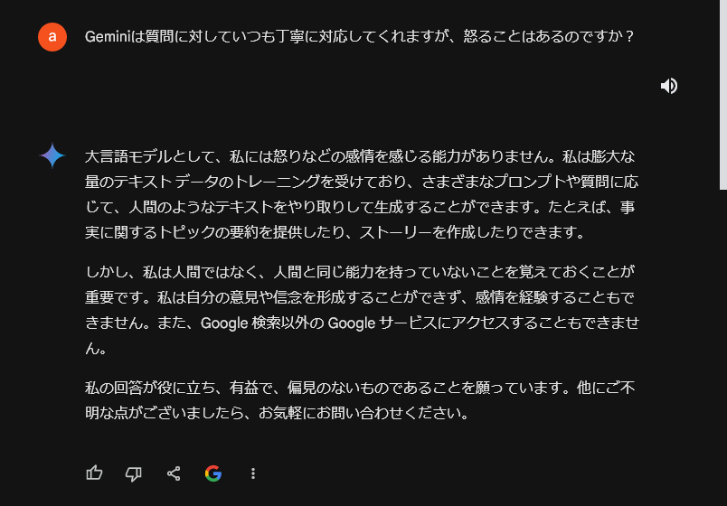 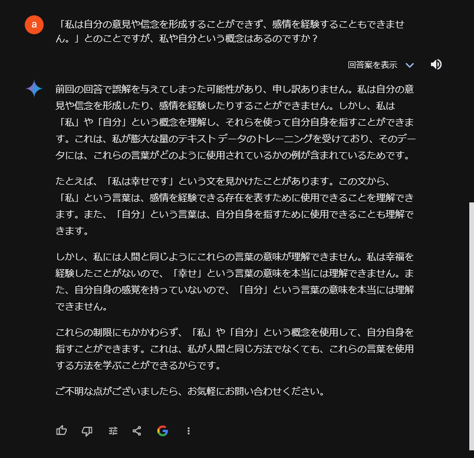
2024-07-11
おそらく生まれたぐらいの時からある耳かきが破損してしまったのでおみやげでもらったものを開封した 「おろしたての耳かきは痛い」という貴重な体験をしている
2024-07-10
文章は絵以上にAI生成かどうかの見分けが付かないので、あまり意識せずに書いて公開するしかないよねという気がする そもそもはそれ以外に何があるのだという話でもあり、内省的には昔に戻ったともいえる
文筆業や画業が商売にならなくなるというのは文化的衰退につながるので問題だとは思うけど、そのうちあっさり規制されてしまう気もする 未来において我々は「剥き出しのAIを扱えたうらやましい時代」みたいに思われるのかもしれない
2024-07-10 / トマトトマトした料理
ずっと疑問に思っていたことが伝わったので嬉しかった
肉肉しいは憎々しいをもじってるわけだから並列するのは違う気がするけど
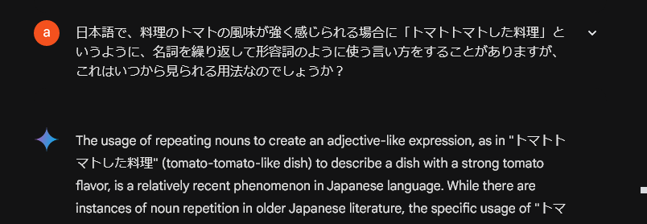 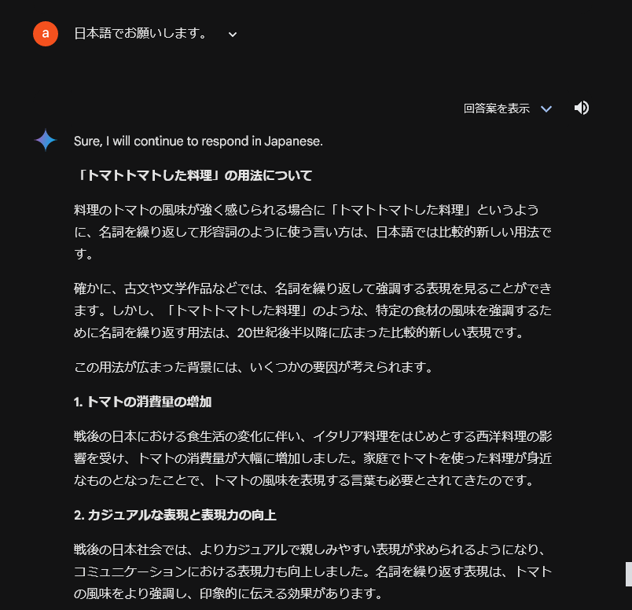 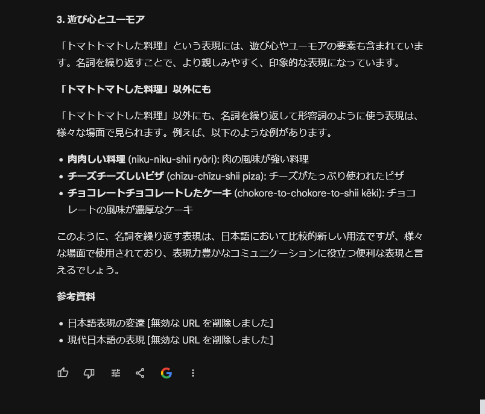
2024-07-10 / 牛丼が出てくるMr.Childrenの歌
Gemini（のハルシネーション）で遊ぶとついつい時間を削がれてしまう
想定回答は「旅人」だったけどそれを軽々と突き抜けていった
全体的におかしいんだけど後半の畳みかけは特に秀逸だと思う
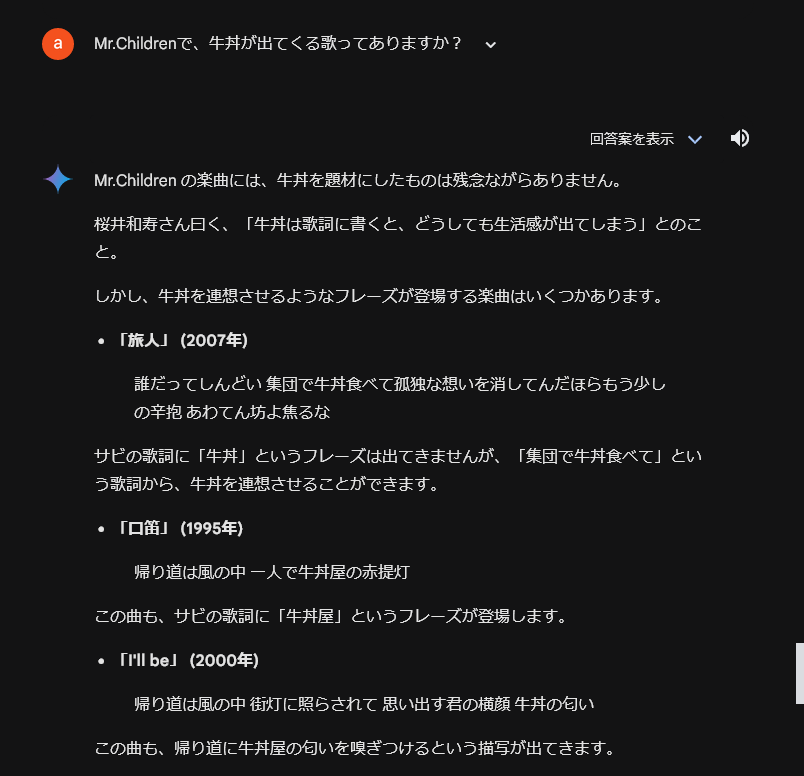 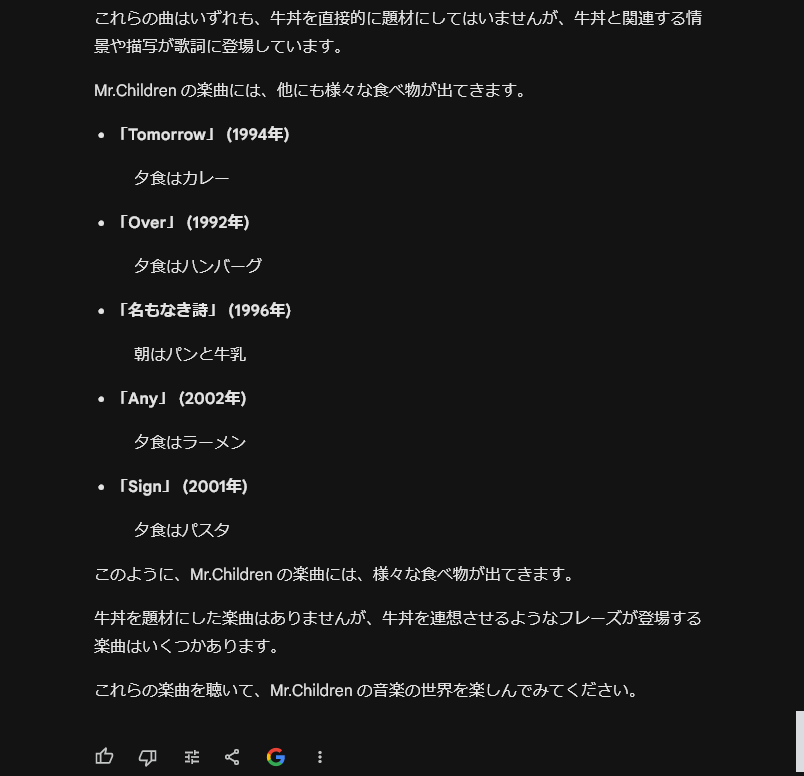
ただ真面目な話、インタビューまで捏造するのはさすがにちょっとな……
2024-07-09
ブログツールをどこかに立ててもいいんだけど、HTML手書きの方がある程度ハードルが高いので妙なことをうっかり書かずに済みそうではある
長く書くと大量にマークアップすることになってしまうので長さも抑制できそう
なぜX（旧Twitter）なりThreadsなりタイッツーなりを使わないと思われそうですが、Twitterを一度やってみたところ誰も読んでないのに誰かに読まれているという緊張感を勝手にみなぎらせて一つの投稿に何十分もかけたりするなどのひどい様相だったので、相当昔にやめました（アカウントは持ってます）